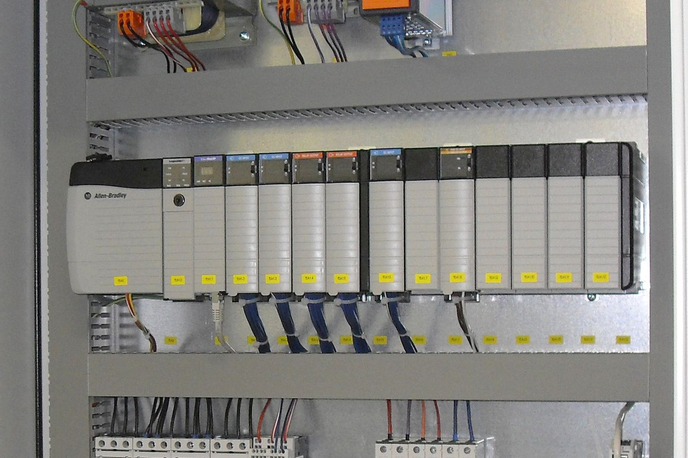
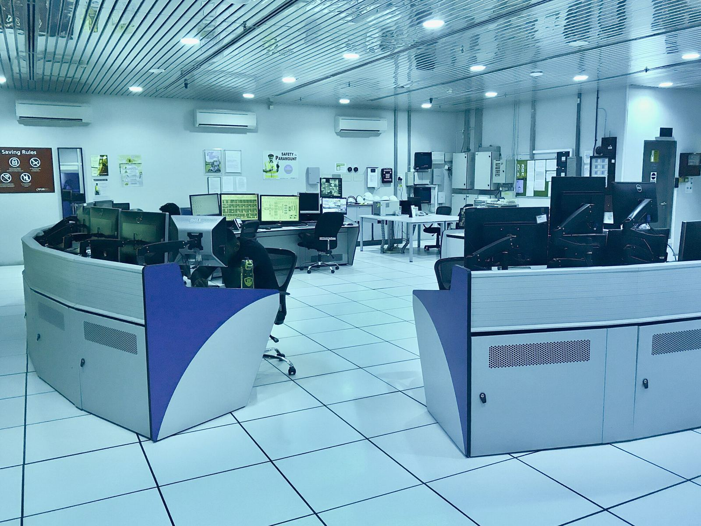
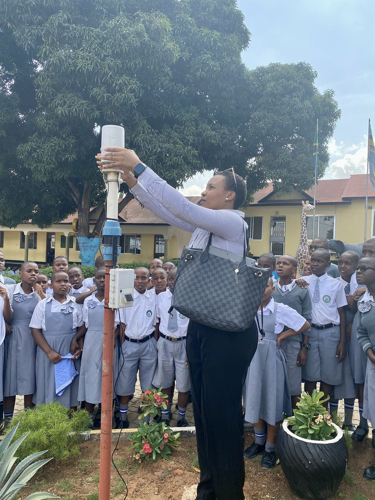
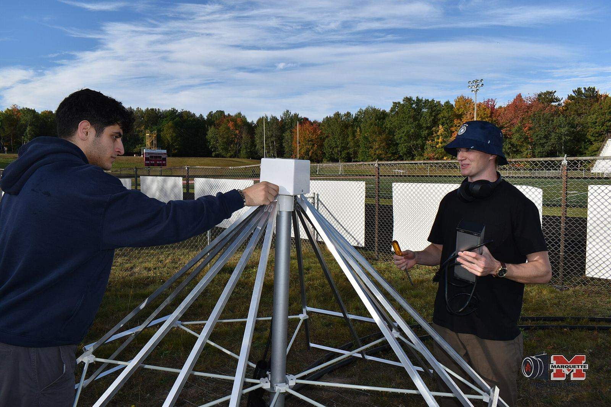
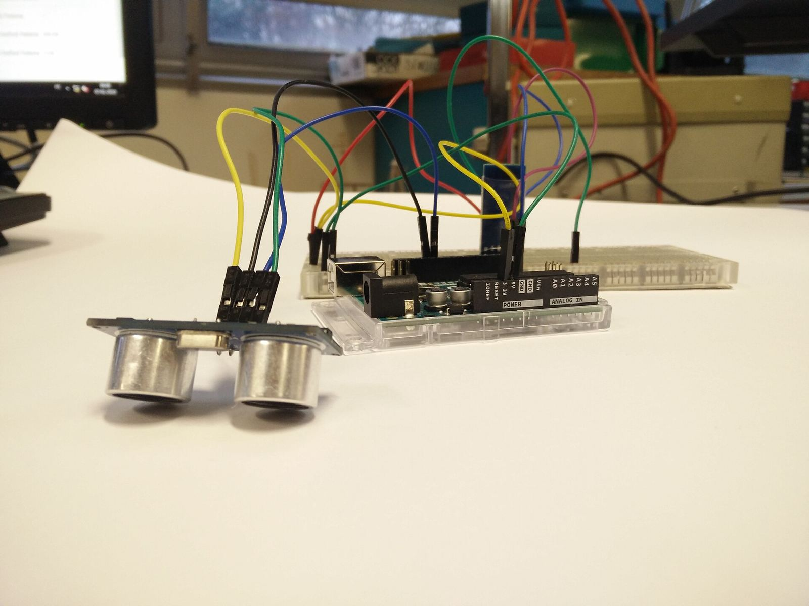

Solusi IoT
Sensor, gateway, dan dashboard yang menampilkan kondisi kebun, pabrik, atau gedung Anda secara langsung, dari mana saja.
Sensor tanah & cuaca, pemantauan jarak jauh, dashboard real-time
Solusi, pelatihan, dan konsultasi IoT & otomasi untuk perkebunan, pabrik sawit, gedung, dan sekolah di Medan.
Contoh tampilan dashboard
Data simulasi untuk ilustrasi, bukan data pelanggan.
Setiap lokasi punya pertanyaan yang sama: apa yang sedang terjadi, apa yang akan rusak, dan siapa yang bisa memperbaikinya.

Data cuaca, tanah, dan air dari blok-blok yang berjauhan.

Mesin dan tangki dipantau 24 jam, dengan alarm dini.

Panel kontrol andal dan data produksi digital.

Pompa, listrik, dan lampu dari satu layar.

Pelajaran IoT dan otomasi yang langsung praktik.
Sensor mengukur, gateway mengirim, dashboard menampilkan, dan tim Anda bertindak. Kami membangun rangkaian itu dan melatih orang yang menjalankannya.
Sensor, gateway, dan dashboard yang menampilkan kondisi kebun, pabrik, atau gedung Anda secara langsung, dari mana saja.
Sensor tanah & cuaca, pemantauan jarak jauh, dashboard real-time
Panel kontrol dan logika yang menjalankan mesin dan proses dengan andal, dari satu pompa hingga satu lini produksi.
PLC & HMI, mikrokontroler, retrofit panel
Kursus praktik untuk tim, siswa, dan engineer, memakai perangkat asli yang bisa dipegang dan dirakit sendiri.
Pelatihan in-house, workshop siswa, upskilling engineer
Pandangan dari luar sebelum Anda berinvestasi: analisis kebutuhan, desain sistem, dan pemilihan teknologi.
Analisis kebutuhan, desain sistem, pemilihan teknologi
Pelajari lebih lanjut: Jasa IoT & otomasi PLC di Medan Monitoring kebun sawit dengan IoT
Begini cara sistem RedTree bekerja di lokasi Anda.
Suhu, kelembapan, level tangki, arus listrik, dan getaran mesin.
Data dikirim dari lapangan lewat Wi-Fi atau jaringan seluler.
Grafik dan alarm yang bisa dibuka dari HP atau komputer.
Keputusan lebih cepat, sebelum masalah menjadi kerugian.
Jenis sistem dan pelatihan yang kami tawarkan. Foto ilustrasi dari Wikimedia Commons, bukan proyek RedTree.





Jadwal kursus segera diumumkan. Chat kami untuk mendaftarkan minat Anda, atau memesan pelatihan untuk tim Anda sendiri.
Pelajari lebih lanjut: Pelatihan PLC & kursus IoT di Medan
Kirim WhatsApp ke +62 822-7222-6678 dengan satu kalimat tentang kebutuhan Anda.
Kami tanyakan lokasi, peralatan, dan tujuan Anda, lewat telepon atau kunjungan.
Harga bisa dinego. Penawaran dibuat khusus untuk proyek Anda.
Kami pasang, latih tim Anda, dan tetap siap membantu setelah serah terima.
Harga bisa dinego dan tergantung lokasi serta kebutuhan Anda. Chat kami di WhatsApp dengan deskripsi singkat, dan kami balas dengan penawaran.
Di Medan, Sumatera Utara. Sebutkan lokasi Anda saat menghubungi kami, dan kami jelaskan bagaimana kami bisa membantu.
Jadwal segera diumumkan. Chat kami untuk mendaftarkan minat, dan kami hubungi Anda saat tanggal sudah ditetapkan. Pelatihan untuk tim Anda sendiri bisa diatur sesuai permintaan.
Ya. Kami mengadakan workshop IoT dan otomasi yang langsung praktik untuk siswa dan guru, juga untuk engineer dan tim pabrik.
Beberapa kalimat tentang lokasi Anda, apa yang ingin dipantau, diotomasi, atau dipelajari, serta foto panel atau peralatan yang sudah ada jika punya.
Ceritakan kebutuhan Anda, dan kami balas dengan penawaran.